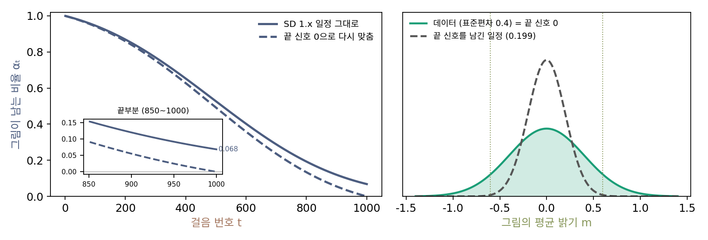

끝 신호 0: 마지막 걸음에서 그림을 다 지우기
생성은 언제나 순수한 잡음에서 출발한다. 그런데 Stable Diffusion 1.x 의 일정은 마지막 걸음 1000에서 αt = 0.0683, σt = 0.9977이다. 위에서 본 가장 큰 신호로 나눈 잡음 크기 14.61이 바로 이 걸음이다. 학습 때 신경망이 받은 가장 짙은 그림에는 원래 그림이 6.8% 남아 있었고, 생성 때 받는 첫 그림에는 하나도 남아 있지 않다. 픽셀 하나만 보면 0.068 대 0.998이라 그림은 잡음에 묻혀 보이지 않는다. 이 작은 어긋남이 만든 그림의 무엇을 바꿀까?
역사: 늘 중간 밝기만 그리는 모델
2023년 바이트댄스의 린(Shanchuan Lin), 류빙천(Bingchen Liu), 리자스(Jiashi Li), 양샤오(Xiao Yang)는 이상한 버릇 하나에서 출발했다. Stable Diffusion 은 2.1판까지 늘 중간 밝기의 그림만 만들었다. 픽셀을 −1~1로 잴 때 만든 그림의 평균 밝기는 아주 밝거나 아주 어두운 장면을 청해도 0 근처였고, 「Solid black background(새까만 배경)」처럼 단순한 프롬프트도 제대로 그리지 못했다. 그보다 앞서 거텐버그(Nicholas Guttenberg)는 학습 때 채널마다 모든 픽셀에 같은 값을 더한 잡음(오프셋 잡음)을 섞어 이 버릇을 누그러뜨렸다. 린과 동료들은 그것이 「근본 원인을 고치지 않는 요령」이라고 보고 원인을 잡음 일정에서 찾았다. 마지막 걸음의 신호 대 잡음비는 DDPM 의 일정에서 4.04 × 10⁻⁵, Stable Diffusion 의 일정에서 0.00468로, 흔히 쓰는 어느 일정도 0이 아니었다. 논문은 새어 나간 신호에 「각 채널의 평균 같은 가장 낮은 주파수의 정보」가 들어 있고, 모델이 그것을 읽고 따르도록 배운다고 적었다.
밝기 숫자 하나
그림 한 장의 평균 밝기 m 하나만 따라가 보자. 픽셀은 d = 4096개(가로세로 64, Stable Diffusion 1.x 잠재의 한 채널 크기)이고, m은 그림마다 평균 0, 표준편차 0.4로 흩어진다고 하자. 마지막 걸음의 그림을 픽셀마다 평균 내면 신호는 0.0683m이라 표준편차가 0.0273이다. 잡음은 서로 상관없는 4096개를 평균 내니 표준편차가 0.9977/√4096 = 0.0156으로 줄어든다. 픽셀 하나에서는 묻혀 있던 신호가 평균에서는 잡음보다 크다. 가장 잘 배운 신경망은 이 평균에서 밝기 분산의 75.4%를 읽어 낸다. 그림 전체의 평균은 파수가 0인, 가장 굵은 무늬다. 굵은 무늬가 가장 오래 남는다는 것이 일정의 끝에서는 이런 모습으로 나타난다.
생성 때 받는 순수 잡음은 평균의 표준편차가 1/64 = 0.0156으로, 학습 때 마지막 걸음 평균의 표준편차 √(0.0273² + 0.0156²) = 0.0314의 절반이다. 신경망은 「밝기 신호가 0 근처인 그림」을 받았다고 읽고, 그 밝기를 끝까지 따른다. 밝기 하나만 보면 데이터도 출발점도 정규분포라, 새 잡음 없이 거꾸로 걸으면 출발 자리와 도착 자리가 비례한다. 그래서 만든 그림의 밝기 표준편차는 0.4 × 0.0156/0.0314 = 0.199, 데이터의 절반이 된다. 평균 밝기가 ±0.6을 넘는 그림이 데이터에는 13.4% 있지만 만든 그림에는 0.25%뿐이다.
린과 동료들은 일정을 이렇게 고쳤다. 첫 걸음의 α₁은 그대로 두고 마지막 걸음의 αT만 0이 되도록, 모든 걸음의 αt에서 αT를 빼고 같은 배율로 늘린다.
이렇게 마지막 걸음에서 그림이 남는 비율을 정확히 0으로 맞춘 일정을 끝 신호 0 (마지막 걸음에서 그림을 다 지우는 일정 / zero terminal SNR)이라 한다. 그러면 학습 때 마지막 걸음의 그림이 생성 때의 출발점과 똑같이 순수한 잡음이 되어, 밝기 장난감에서 만든 그림의 폭이 데이터와 같은 0.4로 돌아온다. 직선 일정은 t = 1에서 αt = 0이니 처음부터 끝 신호 0이다. 분산 폭발 일정은 σt를 아무리 키워도 그림이 남으므로 끝 신호 0에 정확히 닿을 수 없다.

ML에서: 일정 하나를 고치면 따라 고칠 것들
ComfyUI 의 comfy/model_sampling.py 에는 같은 고침이 시그마 눈금으로 들어 있다(rescale_zero_terminal_snr_sigmas). 다만 마지막 시그마가 끝없이 커지면 계산이 멈추므로, 마지막 걸음의 αt² 를 4.9 × 10⁻⁸ 로 남겨 시그마를 4518.8 에서 멈춘다. ModelSamplingDiscrete 마디의 zsnr 칸을 켜거나, 이 일정으로 학습했다고 표시된 체크포인트를 읽으면 이 일정이 쓰인다. 영상 모델 CogVideoX 는 설정부터 끝 신호 0이다. 논문은 일정만 고치지 않았다. 고친 일정에 맞춰 신경망이 맞히는 것을 바꾸고, 샘플러가 첫 걸음을 마지막 걸음에서 디디게 하고, 가이던스를 건 출력의 크기를 다시 맞췄다. Stable Diffusion 2.1-base 를 네 가지를 모두 고쳐 이어 학습한 모델은 아주 어두운 장면과 새하얀 배경을 그렸다.
문제 13. 살짝 비치는 컵
시음가가 음료의 진하기를 맞히는 연습을 했다. 연습용 컵은 반투명이라 음료 색이 아주 희미하게 비쳤고, 시음가는 맛과 함께 그 색으로 진하기를 가늠하는 버릇이 들었다. 대회 컵은 완전히 불투명하고 겉이 모두 같은 회색이다. (가) 대회에서 시음가가 말하는 진하기는 어느 쪽으로 치우치겠는가? (나) 색이 그렇게 희미했는데도 왜 버릇이 될 수 있었는가? (다) 무엇을 바꾸면 고쳐지는가?

색이 희미했으면 거의 맛으로 맞혔을 테니까 대회에서도 별 차이 없지 않을까요?

회색 컵을 처음 받았을 때, 연습한 대로라면 그 색을 무엇으로 읽을까요?

아, 「색이 진하지도 연하지도 않다」로 읽겠네요. 그럼 처음 짐작이 늘 중간 진하기에서 시작해요. 맛으로 조금 고쳐도 끝까지 중간 쪽으로 끌려가서, 아주 진하거나 아주 연한 음료라고는 잘 말하지 않을 거예요.

(나)는 컵 전체가 한 가지 색으로 비치니까 그래. 한 점은 희미해도 컵 전체를 한꺼번에 보면 또렷해. 그림의 평균 밝기도 픽셀 하나로는 묻히는데 4096개를 평균 내면 잡음보다 커졌잖아.

(다)는요?

연습 컵도 완전히 불투명하게 바꾸면 돼요. 그러면 색에 기대는 버릇이 아예 안 들고, 처음 짐작을 맛으로만 정하는 법을 익혀요. 마지막 걸음의 그림을 순수한 잡음으로 만드는 끝 신호 0이 바로 그거예요.

연습 문제지에 답이 살짝 비쳐 보이면, 본시험에서 답이 안 보일 때 오히려 헤매는 거랑 같네요.
문제 14. 일정을 다시 맞추기
Stable Diffusion 1.x 의 일정은 α₁ = 0.99957, αT = 0.06826 이고, 걸음 500에서 αt = 0.5269, 걸음 900에서 0.1196 이다. 위의 식으로 끝 신호 0에 맞춘다. (가) 배율 α₁/(α₁ − αT)은? 걸음 500과 900의 α′t와 신호로 나눈 잡음 크기 σ′t/α′t를 원래 값과 견주어라. (나) 마지막 걸음의 신호로 나눈 잡음 크기는? (다) xt를 받아 섞인 잡음 ε를 맞히는 신경망은 마지막 걸음에서 무엇을 배우는가? 그 출력으로 원래 그림 (xt − σtε̂)/αt를 되돌릴 수 있는가?
(가) 배율은 0.99957/0.93131 = 1.0733이에요. 걸음 500은 (0.5269 − 0.0683) × 1.0733 = 0.4923, 900은 (0.1196 − 0.0683) × 1.0733 = 0.0551이요. 0.068을 빼는 것뿐이니 가운데는 거의 그대로겠죠.
신호로 나눈 잡음 크기로도 견줘 볼까요?

500은 1.613에서 1.768로 조금 커졌는데… 900은 8.30에서 18.13으로 두 배가 넘어요. 같은 0.068을 빼도 αt가 작은 끝 쪽에서는 그게 큰 몫이네요.
(나)는 α′T = 0이니 0으로 나눠서 끝없이 커져. 그림이 하나도 안 남았다는 뜻이니 맞는 거고.
(다)는 어때요?

마지막 걸음에서는 xT = ε 그 자체라, 받은 걸 그대로 내놓으면 정답이에요. 손실은 0이 되는데 그림에 대해서는 아무것도 안 배워요. 원래 그림으로 되돌리는 식도 분자와 분모가 둘 다 0이라 값이 안 정해져요.

그래서 린과 동료들은 잡음 대신 αtε − σtx₀(v-예측의 v)를 맞히게 했어요. 마지막 걸음에서 이 값은 −x₀라서, 신경망은 순수 잡음을 받고 그림 쪽을 맞혀야 해요. 잡음에는 단서가 없으니 가장 잘 맞혀도 프롬프트에 맞는 그림들의 평균이고요. 논문의 그림에서도 마지막 걸음의 출력은 잡음을 바꿔도 거의 같은 흐릿한 평균이었어요.
문제 15. 첫 걸음을 어디에 디디나
샘플러는 학습한 1000걸음 가운데 몇 걸음만 골라 걷는다. 10걸음이면 DDIM 공식 구현은 걸음 번호 1, 101, …, 901을 고르고(맨 앞부터 고르게), 다른 방식은 100, 200, …, 1000을 고른다(맨 뒤부터 고르게). 끝 신호 0으로 다시 맞춘 일정에서 걸음 901의 α′t는 0.0544 이다. 위의 밝기 장난감(d = 4096, 밝기 표준편차 0.4)으로 (가) 맨 앞부터 고른 10걸음으로 순수 잡음에서 출발하면 만든 그림의 밝기 표준편차는? (나) 맨 뒤부터 고르면? (다) ComfyUI 의 걸음 일정 ddim_uniform 은 0부터 센 번호 901, 801, …, 1을, simple 은 999, 899, …, 99를 고른다. 끝 신호 0으로 학습한 모델에는 어느 쪽을 써야 하는가?
일정을 고쳐서 마지막 걸음이 순수 잡음이 됐으니까 이제 어느 쪽이든 괜찮지 않아요?
맨 앞부터 고르면 첫 걸음은 몇 번이죠? 신경망은 그 걸음에서 어떤 그림을 받는다고 배웠어요?
901이요. 거기서는 그림이 5.44% 남은 그림을 받는다고 배웠어요. 학습 때 평균의 표준편차가 √((0.0544 × 0.4)² + (1 − 0.0544²)/4096) = 0.0268인데 순수 잡음은 0.0156이니, 만든 밝기 표준편차는 0.4 × 0.0156/0.0268 = 0.233이에요. 일정을 고쳐 놓고도 원래의 0.199와 별로 다르지 않네요.
(나)는 첫 걸음이 1000이라 학습 때 그 걸음이 정확히 순수 잡음이었으니 0.400, 데이터 그대로야. (다)는 simple 이고. ddim_uniform 은 맨 앞부터 고르는 쪽이라 999번 걸음을 한 번도 안 밟아.
그래요. 논문이 「샘플러는 언제나 마지막 걸음에서 출발해야 한다」고 따로 적은 까닭이에요. 학습 때 그 걸음에서 신경망에게 보여 준 것과 생성 때 처음 건네는 것이 같아야 해요. 일정과 첫 걸음, 둘 중 하나만 어긋나도 다시 벌어져요.

맨 앞부터 고르면 걸음 1처럼 잡음이 거의 없는 곳에 한 걸음을 쓰는 것도 아깝네. 걸음 수가 적을수록 손해가 크겠다.